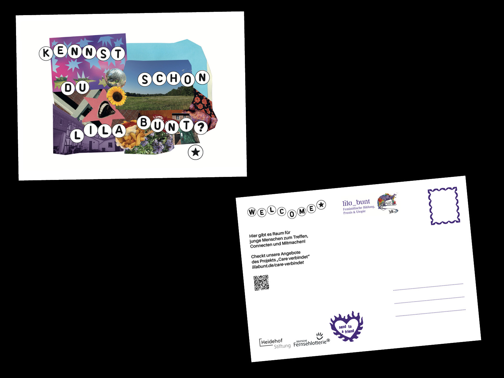
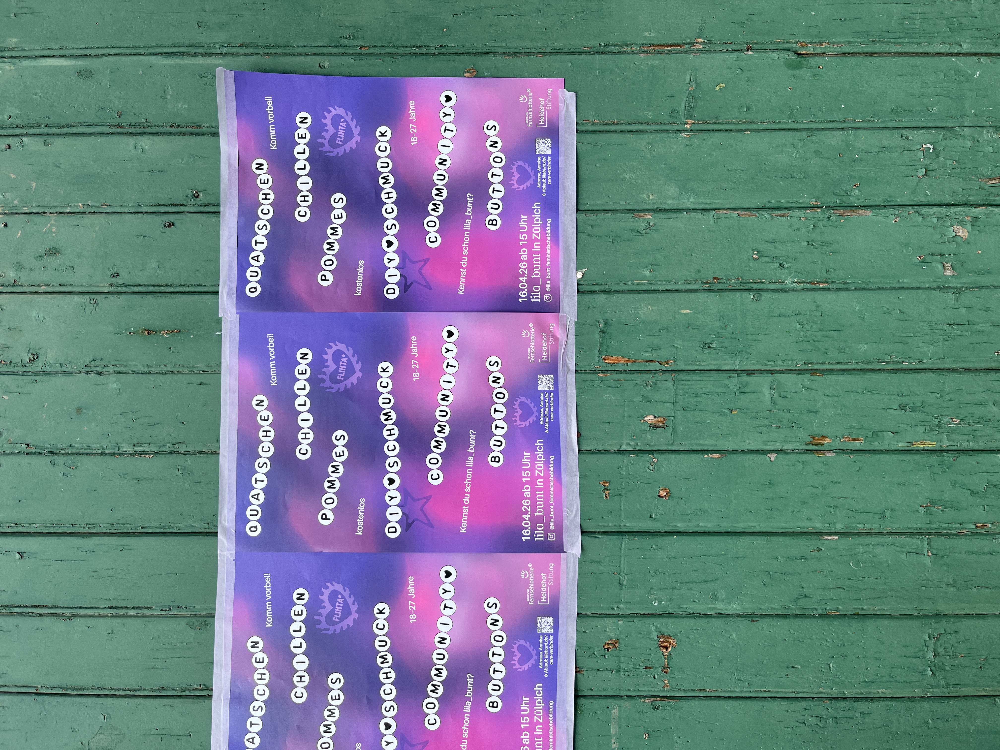

„Care verbindet“ richtet sich an junge FLINTA-Personen (Frauen, Lesben, inter, nicht-binär, trans, agender) mit Armutserfahrung im ländlichen Raum des Kreises Euskirchen. Sie erleben strukturelle Ausgrenzung und haben wenig Zugang zu Bildung, Mobilität und Teilhabe. Wir schaffen kollektive, sichere Räume zur Selbstorganisation, politischen Bildung und gegenseitigen Unterstützung – etwa durch Workshops, Peer- Formate und Care-Angebote im Bildungshaus lila_bunt. Ziel ist es, Selbstwirksamkeit zu stärken, soziale Isolation zu überwinden und nachhaltige, inklusive Ehrenamtsstrukturen aufzubauen - eine community of care. Das Projekt basiert auf einem Community-Care-Ansatz und wird gemeinsam mit der Zielgruppe partizipativ entwickelt, umgesetzt und evaluiert.

